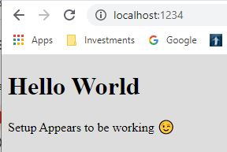

Week 9 Content and Report
Eugene C. Olsen, Section 7, Fall 2021
Web Page Exercises and Experiments
What I Did This Week
- Studied JavaScript: Novice to Ninja Chapter 9, The Window Object.
- Studied JavaScript: Novice to Ninja Chapter 14, HTML5 APIs.
-
Completed the Managing the modern Front-end workflow exercise.

- Prepared for and participated in the Team Activity: Drumkit.
-
Continued on my Poet's Pal app for my final project.
Specifically, obtained words that rhyme with the word entered by the user and
filtered them by number of syllables. Also got the "nearly rhymes" checkbox in the UI.
More to come.
-
Studied CSS
transitions in the MDN documentation and the linked pages as well. This was occasioned by the desire
to better understand the
transitionend event introduced by the instructor's solution to
the team activity this week.
-
Experimented with transition properties in the team activity code, especially the
transition-property property. I found that we can still see all of the
property changes in the playing class even if the transition-property
is set to just transform. Doing so spares our app from firing a multitude of
transitionend and other transition events.
This is probably not a significant performance enhancement
but it was an interesting and informative exercise.
-
Created the proposal for my final project.
Plans for Next Week
- Study MDN: Validating Forms
- Study MDN: Using Fetch
-
Complete the Quakes Near Me exercise.
- Prepare for and participate in the Team Activity.
-
Continue work on my final project. Specifically:
- Respond to feedback from project proposal.
- Code logic for the "nearly rhymes" checkbox.
- Code logic for "Starts with" (alliteration) field.
- If I have time, code logic for Synonyms field.
Blockers
- None at this time.
Notes
-
I have been using
dataset/data- attributes since Week 5 in the Great Hikes exercises.
Also in the Star Wars API team activity.
- Did drawing with
<canvas> last week.
- We have been using local storage for class assignments for several weeks, now.
- In addition to the
transitionend event, I experimented with the
ended event for the audio object and the keyup event as well.
You can see these experiments in the
history for the main.js file on GitHub.
-
In the team activity, since the
transition-property for the key class is
specified as all, many transitions occur. The transitionend event is fired
for each property. We are not interested in the transitions for most of the properties. We are
interested in the transitionend event for the transform property only.
-
The
transform property seems to be consistently the last property to complete the transition
specified for the key class in the team activity starter code.
Questions
- None at this time.
Comments
-
Web Workers are similar to Tasks in C# and threads in C++.
I have done these, including synchronization with semaphores and critical sections, since the 1980s.
-
The Drumkit Team Activity this week seemed "right sized" for an hour.
The Thursday Evening team had a great time collaborating on a solution and had time to do the stretch challenges.
-
The instructor's solution for the team activity this week hardly scratches the surface for transitions.
It is useful, however, to understand the
transitionend event.
-
Just as there is no 'i' in the word "team," there is no 'i' in the word "concatenate."
The word is misspelled multiple times in
the "Managing the Modern Front-End Workflow" unit. It is also spelled correctly once in the unit.
-
I have used this modern workflow for years at work and for personal projects. I have also used
full end-to-end DevOps workflows both on-premises and in the cloud. It's great to push changes
to source control and have builds, unit tests, automated acceptance tests, staging, and deployment
to production just happen automagically. Then there are containers....